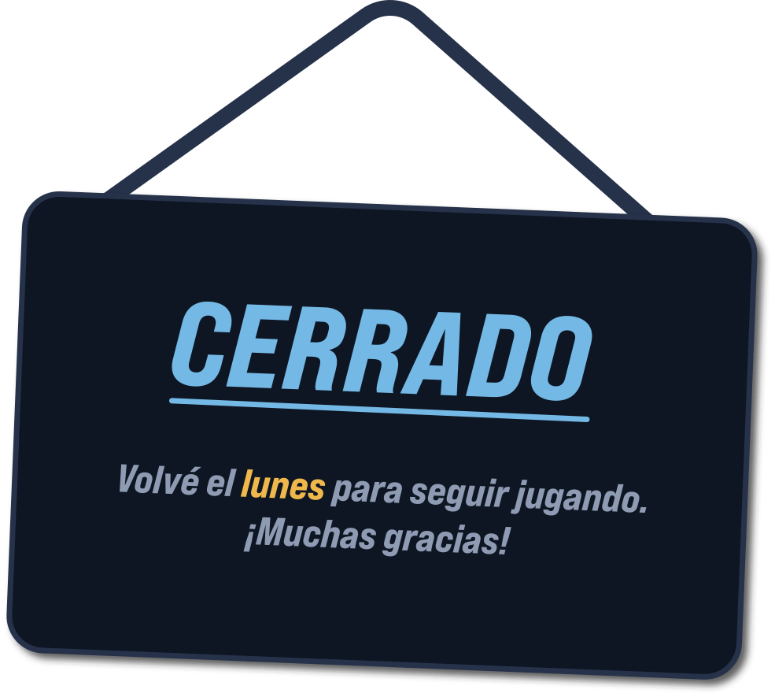
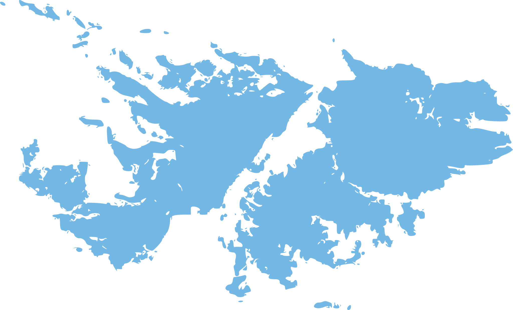

0:000:16
Cargando canción…

Te dejamos el ranking de esta semana


Suena un pedacito de una canción argentina y tenés seis intentos para decir cuál es. Hay una sola por día y es la misma para todo el mundo.
Son tres y aparecen recién sobre el final, una por intento, cuando ya te quedan pocas balas:
Hasta entonces las vas a ver con candado 🔒, para que sepas qué se viene.
Cuanto antes la saques, más puntos:
Si no la sacás, cero. La tabla es semanal, de lunes a viernes, y arranca de nuevo cada lunes; el histórico, en cambio, no se borra nunca.
Ojo: para figurar tenés que escribir tu nombre y tocar Enviar al ranking al terminar. Sin eso tu partida queda guardada pero no suma puntos.
La tabla vive plegada en el borde derecho: se abre con el botón Ranking de arriba o tocando la lengüeta, y se cierra igual.
De lunes a viernes, una canción por día. Los fines de semana el juego cierra. Y si dejás una partida a medio jugar y se te pasa el día, la perdés: no se puede retomar al otro día.
Mientras jugás, el fragmento sale de un clip corto guardado acá mismo; al terminar la partida, la canción entera se escucha con el reproductor oficial de YouTube. Si cerrás la página, la partida del día te queda donde la dejaste.